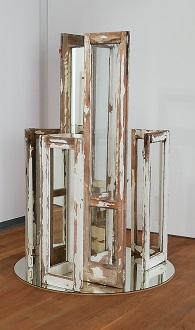
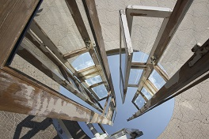

Art Διέξοδος / Way Out
Διέξοδος
Οι αυστηρές κάθετες γραμμές σε αντιπαράθεση με το οριζόντιο πεδίο στο πάτωμα δημιουργούν ένα συναρπαστικό παιχνίδι ανάμεσα στην πραγματικότητα και στην ψευδαίσθηση των αντικατοπρισμών,οδηγώντας τον θεατή σε μία άλλη διάσταση.Μία είσοδος στην οποία πρέπει να κριθεί κατά πόσο ισχύει η πραγματικότητα ή η αναπαράσταση αυτής.
Way out
Strict vertical lines juxtaposed with the horizontal field on the floor creat a fascinating game between reality and the illusion of reflections,ushering the spectator into a different dimession.An entrance where one must decide whether it is reality or its representation that applies.
|  |
 |

|